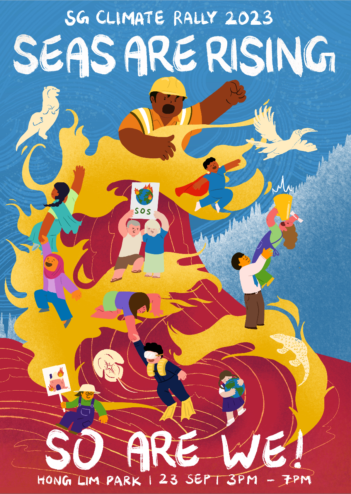
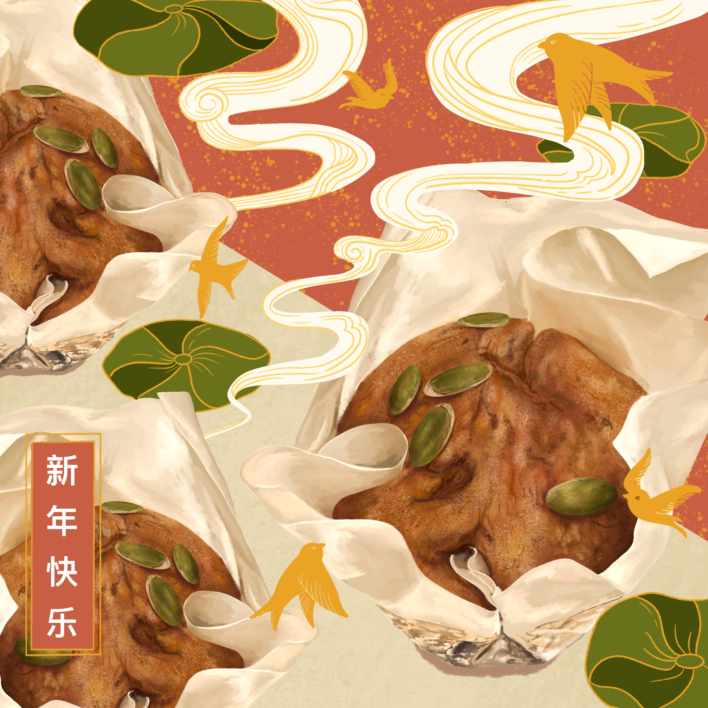
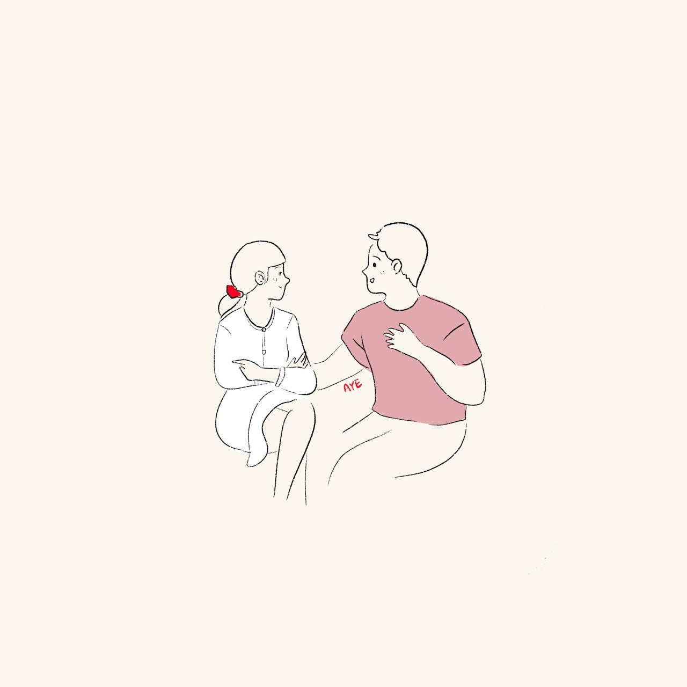
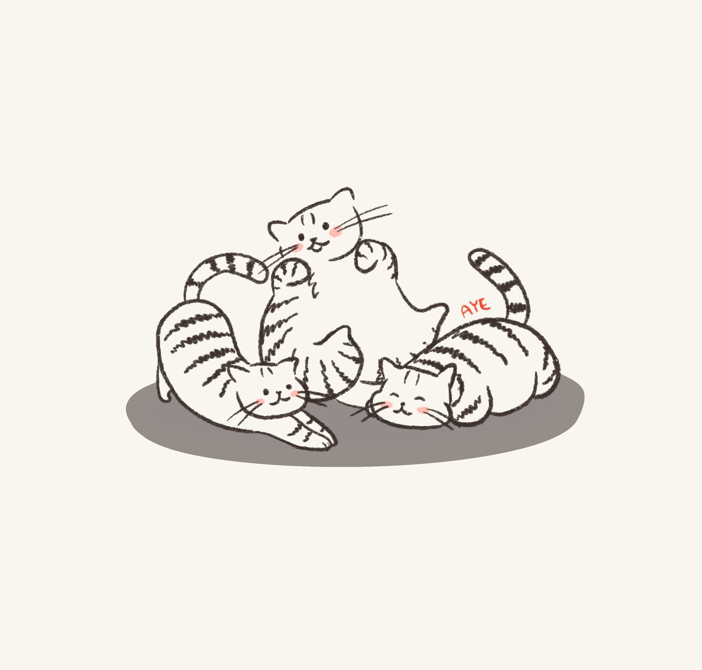

Below are some of Ayeppol's freelance works:
Sourbombe Artisanal Bakery
This is a commissioned animation for the
opening of Sourbombe's first physical shop back in 2019.
Singapore Climate Rally
I worked with Singapore's Climate Rally movement to create their 2023 poster.
Thrive (Business Times)
I draw comics for SPH media's content creation branch for young people to navigate their career, money, and life.
This is one example of such comic.
.JPG)
.JPG)
.JPG)
.JPG)
.JPG)
.JPG)
.JPG)
.JPG)
Yale-NUS Closure
To retaliate against the forced closure of my college,
I created this artwork in hopes of spurring my fellow schoolmates to join forces to undo the school's closure.
I sold prints to raise funds for my classmates in financial need.

Graduation Illustrations
This is a commissioned graduation illustration for a client's gift to her batchmates.

A little illustration I did for my own graduation.

The Busy Undergrad
My sister and I started a home bakery during COVID-19.
We sold banana cakes, muffins, cookies and more.
We even sold Chinese New Year specials featuring: Pumpkin cakes.
 Our best seller was the Burnt Basque Cheesecakes.
Below is an illustration of the miniature version.
We've stopped baking since the world returned to its
normal operationsand we continue to pursue our career and educations.
But I still deeply miss our midnight recipe-testing and cake deliveries.
Love
I enjoy documenting love through my illustrations.
 I was paid to connect lovers through these illustrations
during COVID when many of them could not meet.
The Love I witness is not limited to humans!
Media companies Ayeppol has worked under